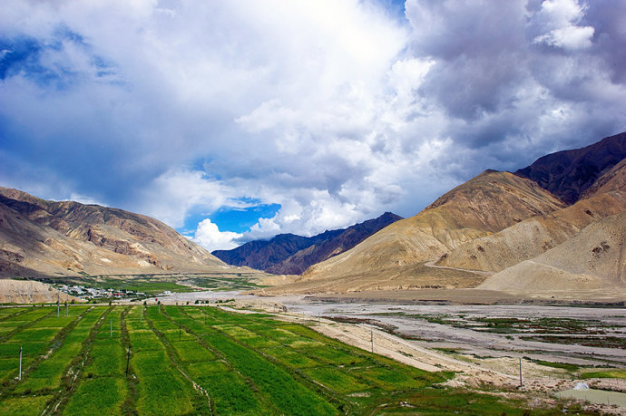
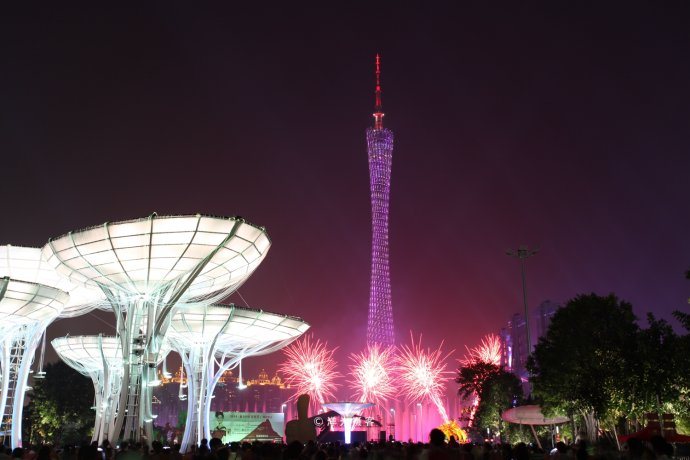
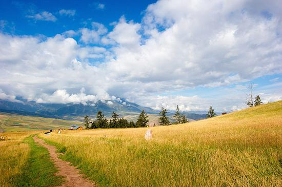

风光壮美的中国尼泊尔普兰边境 一河之隔却犹如两处天地
西藏阿里地区的普兰县，地处中国与印度、尼泊尔三国的交界处，是我国漫长边境线上为数不多的三国交界县之一（全中国只有12个县），因此普兰自古以来就是西藏重要的对外贸易通道，县城里甚至有一个“国际市场”……
头像一柄锈剑

超强台风山竹后世界第二高塔安然无恙，让全球看到真正的中国造
从网上及相关媒体报道中可以看到，当9月16日登陆我国的台风“山竹”让沿途多地遭受重创时，广州塔（又名：小蛮腰）上的霓虹依然在狂风暴雨中绽放光彩，塔身上还不断的播放：“敬畏自然 珍惜生命”、“ 注意安全 祝您平安”等公益广告……
光光摄客

国内媲美欧洲瑞士的小县城，拥有绝美的山顶草原
每年的九月，是北方和西北地区秋色争相斗艳之时，身居南方的我，秋色来的太迟，只好年年往外跑到处去秋摄，今年来到了青海自驾。我们从西宁出发，先前往祁连，翻越达坂山、经过门源、横穿祁连大草原，一路都是美景。……
/> 一起去旅行